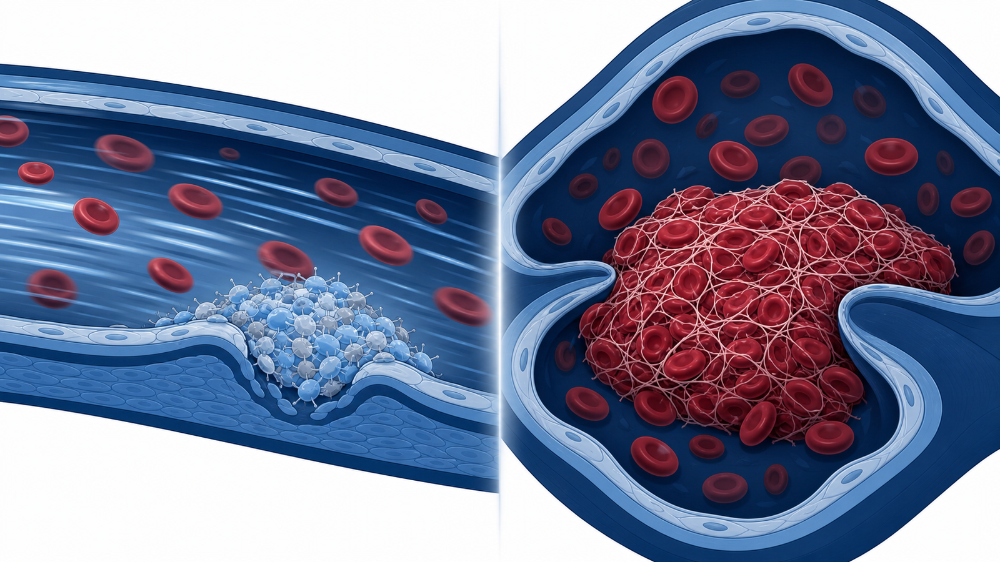
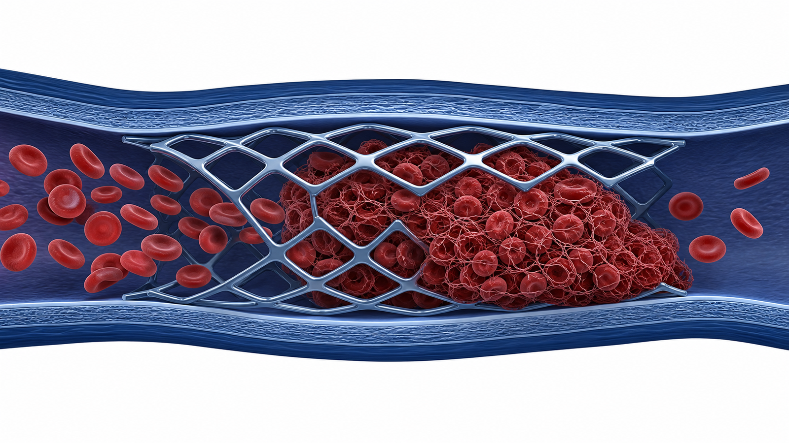
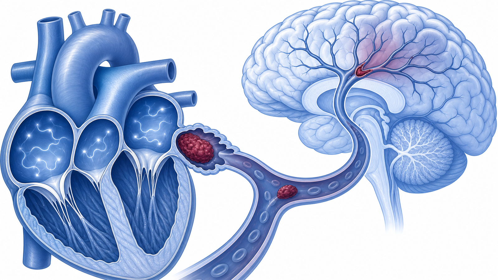

"피 묽게 하는 약",
제대로 알기
내가 먹는 '피 묽게 하는 약' — 항혈소판제·항응고제, 종류와 주의점을 한눈에
같은 "피 약"이 아닙니다
작용하는 위치에 따라 크게 세 가지로 나뉩니다
Antiplatelet
예: 아스피린, 클로피도그렐
Anticoagulant
예: 와파린, DOAC
Thrombolytic
예: tPA, 유로키나아제
동맥 혈전과 정맥 혈전은 다릅니다
혈전의 '재료'가 다르기 때문에, 막는 약도 달라집니다

항혈소판제 — 종류와 특징
작용점과 주의점이 약마다 다릅니다
경구 항응고제 — 와파린 vs DOAC
비판막성 심방세동에서는 DOAC이 표준입니다
- 비타민 K 의존 응고인자 억제
- 음식·약물 상호작용이 많음
- 정기적 INR 채혈로 모니터링
- 효과 변동이 큼 (용량 조절 잦음)
- 기계판막·류마티스 승모판협착엔 와파린만
- 다비가트란·리바록사반·아픽사반·에독사반
- 정기 모니터링 불필요
- 두개내출혈이 와파린보다 적음
- 음식 영향이 적고 복용 간편
- 비판막성 심방세동 1차 (단, 기계판막엔 금기)
DOAC 4종, 무엇이 다른가
신장으로 빠지는 비율이 약 선택을 좌우합니다
주사 항응고제
입원·시술·임신 등 상황에서 사용합니다
급성 관상동맥증후군엔 어떤 P2Y12?
효과가 클수록 출혈도 늘어납니다 — 균형이 핵심
한국인과 클로피도그렐
유전적으로 약효가 잘 나지 않는 사람이 많습니다
장기 단독요법, 클로피도그렐이 앞섭니다
확립된 관상동맥질환 2차 예방에서
스텐트 후 유지요법으로 클로피도그렐 단독이 아스피린 단독보다 허혈·출혈 모두에서 유리했습니다.
한국 HOST-EXAM 연구와 7개 RCT 개별환자 메타분석이 일관된 결과를 보였습니다. 다만 "모든 환자에서 아스피린 → 클로피도그렐 일괄 교체"로 단순화하지 않고, 출혈위험·불내성·비용을 고려해 개별화합니다.
DOAC vs 와파린 — 4대 임상시험
비판막성 심방세동에서 DOAC이 표준이 된 이유
이중경로 차단 — 저용량 항응고 + 아스피린
안정형 관상동맥·말초동맥질환에서
아스피린, 이제 누구나 먹는 약이 아닙니다
1차 예방과 2차 예방은 권고가 다릅니다
- 심혈관 병력이 없는 사람의 예방 목적
- 60세 이상 신규 시작은 권고하지 않음 (D등급)
- 40~59세는 10년 위험 ≥10% + 출혈위험 낮을 때만 개별 결정
- 기존 복용자도 약 75세경 중단을 고려
- 궤양·출혈 과거력엔 회피
- 심근경색·뇌경색·스텐트 등 병력이 있는 사람
- 항혈소판제 지속이 표준
- 임의 중단 금지 (혈전 사건 위험)
- 위장 출혈위험 평가 + 필요 시 PPI 병용
- 아스피린 불내성 시 클로피도그렐 고려
스텐트 후 약, 임의로 끊으면 안 됩니다
스텐트 안에서 피가 굳으면 심근경색·돌연사로 이어집니다

심방세동엔 아스피린이 아니라 항응고제
심장 안에 생긴 혈전이 뇌로 가 뇌졸중을 일으킵니다

심방세동 + 스텐트, 출혈을 줄이는 순서
항응고제 + 항혈소판제 병용은 출혈을 크게 늘립니다
뇌졸중 · TIA 2차 예방
원인이 '혈관'인지 '심장'인지에 따라 다릅니다
비심인성 (동맥)
- 항혈소판제 단독 (아스피린 또는 클로피도그렐)
- 경증 뇌졸중·고위험 TIA 직후 21~90일 단기 DAPT 후 단독 전환
- 동아시아 환자에서 실로스타졸은 출혈이 적은 대안 (CSPS 2)
- 고혈압·당뇨·이상지질혈증 등 위험인자 관리를 함께
심인성 (심장 · AF)
- 항응고제 (비판막성 → DOAC)
- 심방세동 등 색전원이 있으면 항응고가 표준
- 과거 뇌졸중 + ACS/PCI는 프라수그렐 회피
- 기계판막·중등도 이상 승모판협착은 와파린
말초동맥질환과 다리 저림·파행
'사건 예방'과 '증상 개선'을 구분합니다
사건 예방 (심혈관 사건↓)
- 아스피린 또는 클로피도그렐
- 고위험은 리바록사반 2.5 + 아스피린 (이중경로)
- 생존·예후는 statin·금연·혈압·혈당 조절이 핵심
- 단일 항혈소판제(SAPT)가 기본 — 무분별 병용 회피
증상 개선 (간헐적 파행)
- 실로스타졸이 보행거리 개선 (FDA·EMA 적응증)
- 출혈 고위험·경증엔 사르포그렐레이트
- 실로스타졸은 모든 중증도 심부전에 절대금기
- 처음 며칠 두통·두근거림은 적응 과정일 수 있음
정맥혈전색전증 (DVT · 폐색전증)
항혈소판제가 아니라 항응고제로 치료합니다
특수 환자군에서 주의할 점
같은 약도 환자에 따라 선택이 달라집니다
콩팥기능과 DOAC 용량
비판막성 심방세동 기준 (FDA 라벨)
위장관 출혈 위험 줄이기
소화기내과에서 특히 중요한 관리 포인트
내시경·시술 전, 약은 어떻게 하나
"그냥 다 끊고 오세요"는 위험합니다 — 약마다 다릅니다
이런 출혈 신호는 즉시 응급실
출혈이 의심되면 빨리 병원으로 — 역전제가 있습니다
환자가 꼭 기억할 것
안전하게 약을 복용하는 7가지
약은 스스로 끊지 말고
주치의와 상의하세요
궁금한 점은 진료 때 언제든 문의해 주세요
토요일 08:30~13:30
광교중앙로 298, 4층
같은 자료를 다시 볼 수 있어요